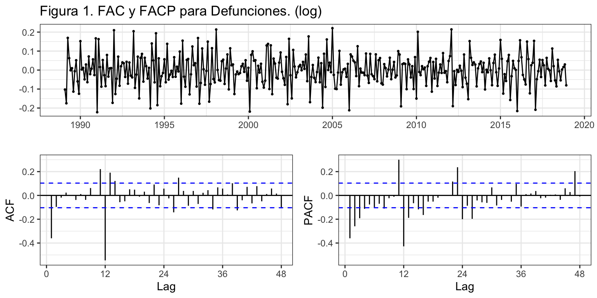
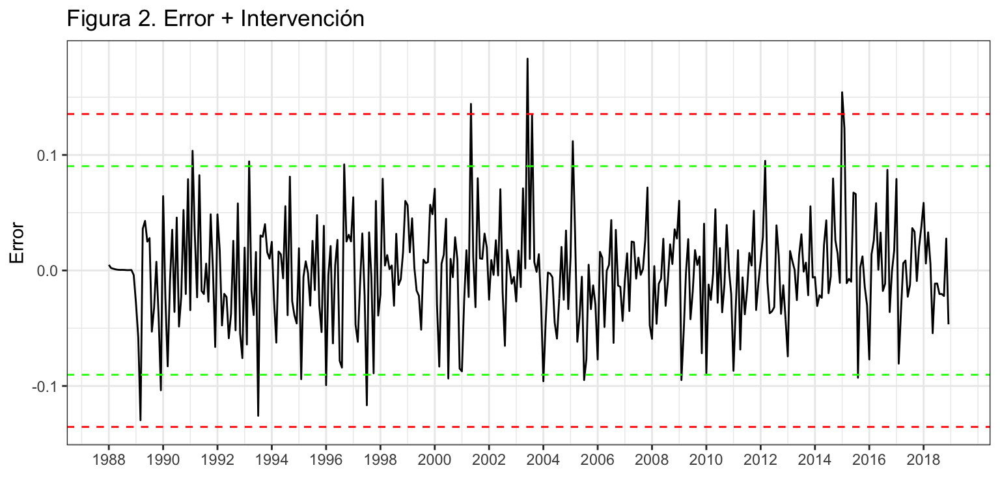
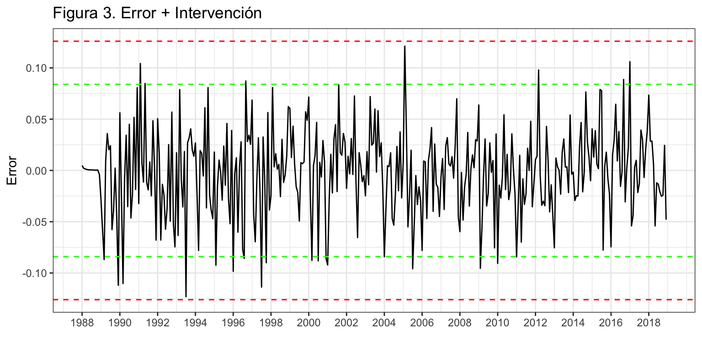
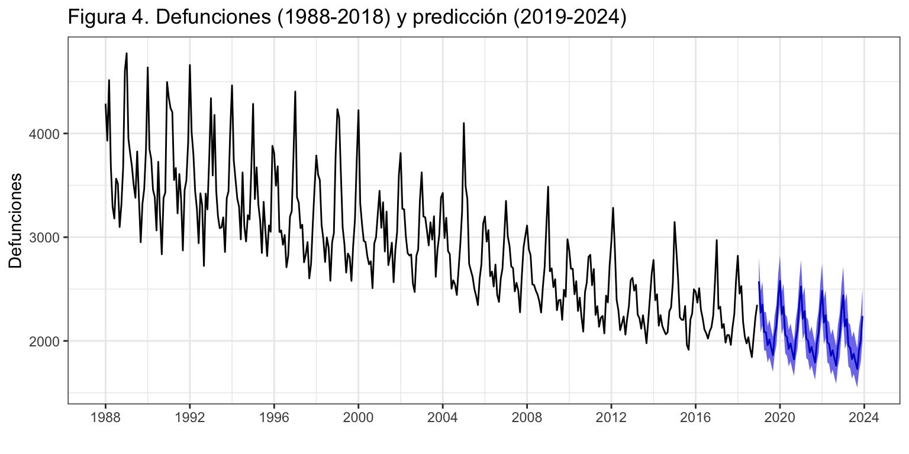
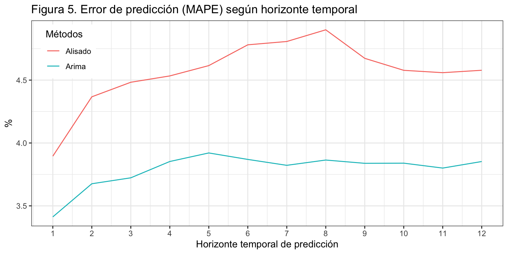

Introducción
Consideremos de nuevo la serie temporal correspondiente al número de defunciones causadas por enfermedades cerebrovasculares, Esta serie está disponible en el Instituto Nacional de Estadística desde enero de 1980 hasta diciembre de 2018, un total de 39 años o 468 meses
En la descriptiva vimos que la descomposición revelaba la presencia de varios valores atípicos concentrados al inicio de la serie. Por este motivo, para su análisis por modelos ARIMA vamos a recortar la serie, que empezará el enero de 1988.
También hemos visto que para alcanzar la estacionariedad y verificar la hipótesis de ergodicidad es necesario diferenciar la serie tanto en la parte regular como estacional y decidimos usar la transformación logarítmica para linealizar la serie y ganar en interpretabilidad.
DefEnfCer <- read.csv2("./series/Enfermedades cerebrovasculares.csv", header = TRUE)
DefEnfCer <- ts(DefEnfCer[,2], start = 1980, freq = 12)
DefEnfCer <- window(DefEnfCer, start = 1988)
Identificación
Vamos a identificar los valores de \(p\), \(q\), \(P\) y \(Q\). Para ello, analizaremos la FAC y la FACP, y solicitaremos con auto.arima y seas una identificación automática. Con auto.arima incluiremos un efecto calendario para el número de días del mes y otras variables ficticias para los tres valores atípicos ya identificados cuando aplicamos Alisado exponencial: febrero de 1999, enero de 2005 y febrero de 2012. La descriptiva realizada revelaba que las muertes por enfermedades cerebrovasculares está poco relacionada con el número de días del mes y más con la estación del año.
ggtsdisplay(diff(diff(log(DefEnfCer), lag = 12)), lag = 48,
main = "Figura 1. FAC y FACP para Defunciones. (log)")

En la parte regular, la FAC muestra que la primera autocorrelación está por encima del IC95 y en la FACP se observa decrecimiento. En la parte estacional, la FAC muestra una autocorrelación significativa en el orden 12 y la FACP muestra decrecimiento. Así, podemos identificar el proceso como \(log(DefEnfCer_t) \sim ARIMA_{12}(0,1,1)(0,1,1)\).
Veamos ahora auto.arima
DiasMes <- monthdays(DefEnfCer)
d0299 <- 1*(cycle(DefEnfCer) == 2 & trunc(time(DefEnfCer)) == 1999)
d0105 <- 1*(cycle(DefEnfCer) == 1 & trunc(time(DefEnfCer)) == 2005)
d0212 <- 1*(cycle(DefEnfCer) == 2 & trunc(time(DefEnfCer)) == 2012)
auto.arima(DefEnfCer, d = 1, D = 1,
lambda = 0,
xreg = cbind(DiasMes, d0299, d0105, d0212))
Series: DefEnfCer
Regression with ARIMA(2,1,2)(2,1,2)[12] errors
Box Cox transformation: lambda= 0
Coefficients:
ar1 ar2 ma1 ma2 sar1 sar2 sma1 sma2
0.8083 -0.0937 -1.5329 0.5557 -0.8925 -0.2432 -0.1314 -0.5405
s.e. 0.0271 0.0317 0.0317 0.0315 0.0308 0.0357 0.0387 0.0282
DiasMes d0299 d0105 d0212
-0.0011 0.1842 0.1226 0.2028
s.e. 0.0174 0.0419 0.0416 0.0441
sigma^2 estimated as 0.002147: log likelihood=589.08
AIC=-1152.16 AICc=-1151.11 BIC=-1101.68
La función auto.arima identifica un complejo proceso \(ARIMA_{12}(2,1,2)(2,1,2)\), donde el coeficiente para para días del mes claramente no es significativo. La identificación alcanzada por seas es un proceso \(ARIMA_{12}(1,1,1)(1,1,1)\), con dos intervenciones en febrero de 1999 y 2012.
Call:
seas(x = DefEnfCer)
Coefficients:
Estimate Std. Error z value Pr(>|z|)
AO1999.Feb 0.18751 0.04205 4.459 8.25e-06 ***
AO2012.Feb 0.20692 0.04231 4.891 1.00e-06 ***
AR-Nonseasonal-01 0.25258 0.05573 4.532 5.83e-06 ***
AR-Seasonal-12 -0.19962 0.05529 -3.611 0.000305 ***
MA-Nonseasonal-01 0.93923 0.02055 45.700 < 2e-16 ***
MA-Seasonal-12 0.84122 0.03026 27.800 < 2e-16 ***
---
Signif. codes: 0 '***' 0.001 '**' 0.01 '*' 0.05 '.' 0.1 ' ' 1
SEATS adj. ARIMA: (1 1 1)(1 1 1) Obs.: 372 Transform: log
AICc: 4560, BIC: 4587 QS (no seasonality in final): 0
Box-Ljung (no autocorr.): 19.56 Shapiro (normality): 0.9848 ***
Vamos a partir de la identificación obtenida por seas (más parsimoniosa que la de auto.arima), incluyendo las tres variables ficticias que afectan un único mes: \(log(DefEnfCer) \sim ARIMA_{12}(1,1,1)(1,1,1) + AI\).
Estimación
La siguiente salida muestra el modelo estimado y la figura 2 permite analizar la presencia de más valores extremos.
DefEnfCerArima1 <- Arima(DefEnfCer,
order = c(1, 1, 1),
seasonal = c(1, 1, 1),
lambda = 0,
xreg = cbind(d0299, d0105, d0212))
DefEnfCerArima1
Series: DefEnfCer
Regression with ARIMA(1,1,1)(1,1,1)[12] errors
Box Cox transformation: lambda= 0
Coefficients:
ar1 ma1 sar1 sma1 d0299 d0105 d0212
0.2411 -0.9389 -0.1885 -0.8372 0.1868 0.1144 0.2066
s.e. 0.0595 0.0231 0.0616 0.0391 0.0427 0.0424 0.0424
sigma^2 estimated as 0.002152: log likelihood=586.04
AIC=-1156.07 AICc=-1155.66 BIC=-1125.01
error <- residuals(DefEnfCerArima1)
sderror <- sd(error)
autoplot(error, series="Error",
colour = "black",
xlab = "",
ylab = "Error",
main = "Figura 2. Error + Intervención") +
geom_hline(yintercept = c(-3, -2, 2, 3)*sderror,
colour = c("red", "green", "green", "red"),
lty = 2) +
scale_x_continuous(breaks= seq(1988, 2018, 2))
 Se observan tres valores claramente atípicos en mayo de 2001, junio de 2003 y enero de 2015. Además, hay otros candidatos a valor extremo, entre los que destacan marzo de 1989 y agosto de 2003. Procederemos a incluirlos en el modelo. Además, vamos a incluir febrero de 2015 que en una ronda posterior del análisis del residuo supera las tres desviaciones típicas.
d0501 <- 1*(cycle(DefEnfCer) == 5 & trunc(time(DefEnfCer)) == 2001)
d0603 <- 1*(cycle(DefEnfCer) == 6 & trunc(time(DefEnfCer)) == 2003)
d0115 <- 1*(cycle(DefEnfCer) == 1 & trunc(time(DefEnfCer)) == 2015)
d0215 <- 1*(cycle(DefEnfCer) == 2 & trunc(time(DefEnfCer)) == 2015)
d0389 <- 1*(cycle(DefEnfCer) == 3 & trunc(time(DefEnfCer)) == 1989)
d0803 <- 1*(cycle(DefEnfCer) == 8 & trunc(time(DefEnfCer)) == 2003)
DefEnfCerArima2 <- Arima(DefEnfCer,
order = c(1, 1, 1),
seasonal = c(1, 1, 1),
lambda = 0,
xreg = cbind(d0299, d0105, d0215, d0212, d0501,
d0603, d0115, d0389, d0803))
DefEnfCerArima2
Series: DefEnfCer
Regression with ARIMA(1,1,1)(1,1,1)[12] errors
Box Cox transformation: lambda= 0
Coefficients:
ar1 ma1 sar1 sma1 d0299 d0105 d0215 d0212 d0501
0.2103 -0.9418 -0.1609 -0.8270 0.1906 0.1244 0.1493 0.2216 0.1122
s.e. 0.0602 0.0216 0.0639 0.0391 0.0402 0.0400 0.0413 0.0402 0.0393
d0603 d0115 d0389 d0803
0.1511 0.1148 -0.0742 0.1477
s.e. 0.0396 0.0414 0.0412 0.0400
sigma^2 estimated as 0.001897: log likelihood=612.4
AIC=-1196.81 AICc=-1195.59 BIC=-1142.44
Aparentemente las variables de intervención incluidas son significativas, exceptuando la de marzo de 1989. Este hecho lo contrastaremos más adelante.
El análisis gráfico del residuo indica que aún hay candidatos a valores atípicos. Aunque ninguno alcanza las tres desviaciones típicas, al menos dos de ellos están muy cerca. Sin embargo, vamos a dar por concluido este proceso.
error <- residuals(DefEnfCerArima2)
sderror <- sd(error)
autoplot(error, series="Error",
colour = "black",
xlab = "",
ylab = "Error",
main = "Figura 3. Error + Intervención") +
geom_hline(yintercept = c(-3, -2, 2, 3)*sderror,
colour = c("red", "green", "green", "red"),
lty = 2) +
scale_x_continuous(breaks= seq(1988, 2018, 2))

Se observa que tres de los valores atípicos corresponden al mes de febrero y que sus coeficientes estimados toman valores parecidos. También has dos meses de enero atípicos con similar efecto. Vamos a asumir que la causa que hay detrás del valor anómalo en los meses de febrero es la misma. Lo mismo asumiremos para los valores atípicos en enero. Esto nos permite agrupar variables de intervención y simplificar el modelo.
d01aa <- d0105 + d0115
d02aa <- d0299 + d0215 + d0212
DefEnfCerArima3 <- Arima(DefEnfCer,
order = c(1, 1, 1),
seasonal = c(1, 1, 1),
lambda = 0,
xreg = cbind(d01aa, d02aa, d0501,
d0603, d0389, d0803))
DefEnfCerArima3
Series: DefEnfCer
Regression with ARIMA(1,1,1)(1,1,1)[12] errors
Box Cox transformation: lambda= 0
Coefficients:
ar1 ma1 sar1 sma1 d01aa d02aa d0501 d0603
0.2164 -0.9439 -0.1561 -0.8273 0.1248 0.1876 0.1124 0.1508
s.e. 0.0590 0.0211 0.0637 0.0391 0.0291 0.0246 0.0393 0.0397
d0389 d0803
-0.0744 0.1477
s.e. 0.0412 0.0400
sigma^2 estimated as 0.00189: log likelihood=611.52
AIC=-1201.04 AICc=-1200.28 BIC=-1158.33
Por último, veamos si todos los coeficientes del modelo son significativos.
ancho <- max(nchar(names(coef(DefEnfCerArima3)))) + 2
for(i in 1:length(coef(DefEnfCerArima3))) {
wt <- wald.test(b = coef(DefEnfCerArima3),
Sigma = vcov(DefEnfCerArima3),
Terms = i)
cat("\nCoeficiente: ", format(names(coef(DefEnfCerArima3))[i], width = ancho), "valor de p: ",
formatC(wt$result$chi2[3], digits = 4, format = "f"))
}
Coeficiente: ar1 valor de p: 0.0002
Coeficiente: ma1 valor de p: 0.0000
Coeficiente: sar1 valor de p: 0.0143
Coeficiente: sma1 valor de p: 0.0000
Coeficiente: d01aa valor de p: 0.0000
Coeficiente: d02aa valor de p: 0.0000
Coeficiente: d0501 valor de p: 0.0043
Coeficiente: d0603 valor de p: 0.0001
Coeficiente: d0389 valor de p: 0.0713
Coeficiente: d0803 valor de p: 0.0002
Aunque el coeficiente del efecto de marzo de 1989 no es significativo al 5%, si los es al 10% así que optamos por dejarlo.
Validación
Analizando los criterios de bondad de ajuste se tiene que: el error medio (ME), igual a -6.85, es prácticamente cero por lo que no parece que haya sesgo en las predicciones; en media nos equivocamos en 133 defunciones (RMSE); y el error porcentual medio es 3.2%, muy bajo.
accuracy(DefEnfCerArima3)
ME RMSE MAE MPE MAPE MASE ACF1
Training set -6.92 133.14 98.16 -0.3 3.26 0.57 -0.01
Incorrelación, Homocedasticidad y Normalidad
Veamos ahora si el residuo es ruido blanco.
error <- residuals(DefEnfCerArima3)
Box.test(error, lag = 2,type = "Ljung-Box")
Box-Ljung test
data: error
X-squared = 0.48502, df = 2, p-value = 0.7847
Box.test(error, lag = 24,type = "Ljung-Box")
Box-Ljung test
data: error
X-squared = 14.991, df = 24, p-value = 0.921
Box.test(error^2, lag = 2, type = "Ljung-Box")
Box-Ljung test
data: error^2
X-squared = 0.71374, df = 2, p-value = 0.6999
Box.test(error^2, lag = 24, type = "Ljung-Box")
Box-Ljung test
data: error^2
X-squared = 26.78, df = 24, p-value = 0.3148
Jarque Bera Test
data: error
X-squared = 1.7007, df = 2, p-value = 0.4273
El error muestra ser incorrelado, homocedástico y seguir una distribución normal.
Ecuación del modelo identificado
Ahora que ya hemos dado por válido el modelo, veamos cuál es su ecuación.
El modelo teórico es \[(1 - \phi_1 L)(1 - \phi_{12}L^{12})(1-L)(1-L^{12})log(DefEnfCer_t) =(1+\theta_1 L)(1 + \theta_{12}L^{12})\varepsilon_t +AI.\] Debido a la complejidad del modelo, no vamos a desarrollarlo, ni interpretarlo en su parte estructural. Respecto de la intervención:
En los dos meses de enero atípicos, la defunciones fueron un 12.5% mayores que las observadas en otros meses de enero.
De la misma forma, en los tres meses de febrero atípicos, la defunciones fueron un 18.8% mayores que las observadas en otros meses de febrero.
En mayo de 2001 hubo un aumento en las defunciones del 11.2% respecto de lo esperado; en junio de 2003 del 15.1% y en agosto de 2003 del 14.8%.
En marzo de 1989, las defunciones fueron un 7.4% menores de lo esperado.
Predicción de las defunciones por enfermedad cerebrovascular
Una vez dado por válido el modelo, podemos pasar a realizar predicciones para los próximos años. Como la variables de intervención no son efectos calendario sus valores previstos serán cero.
pDefEnfCerArima3 <- forecast(DefEnfCerArima3,
h = 60,
xreg = cbind(rep(0, 60), rep(0, 60), rep(0 ,60),
rep(0, 60), rep(0, 60), rep(0, 60)),
level = 95)
aggregate(pDefEnfCerArima3$mean, FUN = sum)
Time Series:
Start = 2019
End = 2023
Frequency = 1
[1] 25754.52 25361.52 24914.63 24484.90 24061.15
autoplot(pDefEnfCerArima3,
xlab = "",
ylab = 'Defunciones',
main = 'Figura 4. Defunciones (1988-2018) y predicción (2019-2024)') +
scale_x_continuous(breaks= seq(1988, 2024, 4))

A partir de 2021 se espera que el total de defunciones por enfermedad cerebrovascular caiga por debajo de los 25000 casos.
Comparación con Alisado Exponencial
El método de Alisado exponencial, aplicado sobre el logaritmo de las defunciones identifica un proceso (A,A,A) con \(\alpha=0.18\) y \(\beta = \gamma = 0\). La raíz del error cuadrático medio (RMSE) es de 159 casos y el error porcentual (MAPE) del 3.7%. Estos valores son algo superiores a los obtenidos con el modelo Arima (133 y 3.2%, respectivamente).
summary(ets(DefEnfCer, lambda = 0))
ETS(A,A,A)
Call:
ets(y = DefEnfCer, lambda = 0)
Box-Cox transformation: lambda= 0
Smoothing parameters:
alpha = 0.1764
beta = 1e-04
gamma = 1e-04
Initial states:
l = 8.2094
b = -0.0015
s = 0.1293 -0.0094 -0.0463 -0.1695 -0.0921 -0.0536
-0.0996 -0.0372 -0.0225 0.0957 0.0939 0.2113
sigma: 0.0505
AIC AICc BIC
-1.6107137 0.1180998 65.0104818
Training set error measures:
ME RMSE MAE MPE MAPE MASE ACF1
Training set 4.516472 158.6233 113.1012 -0.1049242 3.683735 0.659023 0.1622008
Vamos a determinar si la aplicación de modelos Arima mejora la calidad de las predicciones lo suficiente como para justificar su uso –frente a los métodos de alisado, mucho más sencillos. Para ello, aplicaremos la metodología de origen de predicción móvil para estimar la capacidad predictiva del modelo Arima y compararla con el modelo de Alisado.
k <- 120
h <- 12
T <- length(DefEnfCer)
s <- T - k - h
mapeArima <- matrix(NA, s + 1, h)
mapeAlisado <- matrix(NA, s + 1, h)
X <- data.frame(cbind(d01aa, d02aa, d0501, d0603, d0389, d0803))
for (i in 0:s) {
train.set <- subset(DefEnfCer, start = i + 1, end = i + k)
test.set <- subset(DefEnfCer, start = i + k + 1, end = i + k + h)
X.train <- data.frame(X[(i + 1):(i + k),])
hay <- colSums(X.train)
X.train <- X.train[, hay>0]
X.test <- data.frame(X[(i + k + 1):(i + k + h),])
X.test <- X.test[, hay>0]
if (length(X.train) > 0) {
fit <- try(Arima(train.set,
order = c(1, 1, 1),
seasonal = c(1, 1, 1),
lambda = 0,
xreg = as.matrix(X.train)), silent = TRUE)
} else {
fit <- try(Arima(train.set,
order = c(1, 1, 1),
seasonal = c(1, 1, 1),
lambda = 0), silent = TRUE)
}
if (!is.element("try-error", class(fit))) {
if (length(X.train) > 0) fcast <- forecast(fit, h = h, xreg = as.matrix(X.test)) else
fcast <- forecast(fit, h = h)
mapeArima[i + 1,] <- 100*abs(test.set - fcast$mean)/test.set
}
fit <- ets(train.set, lambda = 0, model = "AAA", damped = FALSE)
fcast<-forecast(fit, h = h)
mapeAlisado[i + 1,] <- 100*abs(test.set - fcast$mean)/test.set
}
errorArima <- colMeans(mapeArima, na.rm = TRUE)
errorArima
[1] 3.412357 3.675783 3.723007 3.852703 3.920721 3.869289 3.822326 3.864354
[9] 3.838264 3.839550 3.800431 3.852546
errorAlisado <- colMeans(mapeAlisado)
errorAlisado
[1] 3.895174 4.367106 4.482920 4.533209 4.615324 4.780622 4.806991 4.900013
[9] 4.673138 4.577775 4.559047 4.578201
ggplot() +
geom_line(aes(x = 1:12, y = errorArima), colour = "Blue") +
geom_line(aes(x = 1:12, y = errorAlisado), colour = "Red") +
ggtitle("Figura 5. Error de predicción (MAPE) según horizonte temporal") +
xlab("Horizonte temporal de predicción") +
ylab("%") +
scale_x_continuous(breaks= 1:12)

La figura 5 revela que Arima siempre es superior a Alisado en calidad de predicciones, con un error porcentual inferior entre medio y un punto porcentual según el horizonte temporal. Además, en el modelo Arima el error se mantiene prácticamente constante.
LS0tCnRpdGxlOiAiRGVmdW5jaW9uZXMgcG9yIEVuZmVybWVkYWRlcyBDZXJlYnJvdmFzY3VsYXJlcyIKc3VidGl0bGU6ICJQcm9jZXNvcyBBUklNQSBjb24gZXN0YWNpb25hbGlkYWQiCmF1dGhvcjogIkl2w6FuIEFycmliYXMgKERlcHRvLiBBbsOhbGlzaXMgRWNvbsOzbWljby4gVW5pdmVyc2l0YXQgZGUgVmFsw6huY2lhKSIKb3V0cHV0OiAKICBodG1sX2RvY3VtZW50OgogICAgdGhlbWU6IGNlcnVsZWFuCiAgICBoaWdobGlnaHQ6IHB5Z21lbnRzIAogICAgZmlnX2NhcHRpb246IGZhbHNlCiAgICBkZl9wcmludDoga2FibGUKICAgIHRvYzogdHJ1ZQogICAgdG9jX2RlcHRoOiAyCiAgICBudW1iZXJfc2VjdGlvbnM6IHRydWUKICAgIHNlbGZfY29udGFpbmVkOiB0cnVlCiAgICBjb2RlX2Rvd25sb2FkOiB0cnVlCi0tLQoKYGBge3IgY2h1bmtfc2V0dXAsIGVjaG8gPSBGQUxTRX0Ka25pdHI6Om9wdHNfY2h1bmskc2V0KHdhcm5pbmcgPSBGQUxTRSwgCiAgICAgICAgICAgICAgICAgICAgICBtZXNzYWdlID0gRkFMU0UsIAogICAgICAgICAgICAgICAgICAgICAgY29tbWVudCA9ICIiLAogICAgICAgICAgICAgICAgICAgICAgZmlnLmFsaWduID0gImNlbnRlciIsIAogICAgICAgICAgICAgICAgICAgICAgZmlnLnNob3cgPSAiaG9sZCIsCiAgICAgICAgICAgICAgICAgICAgICBmaWcuaGVpZ2h0ID0gNCwKICAgICAgICAgICAgICAgICAgICAgIGZpZy53aWR0aCA9IDgsCiAgICAgICAgICAgICAgICAgICAgICBvdXQud2lkdGggPSAiODAlIikgCmBgYAoKYGBge3IgbGlicmVyaWFzLCBlY2hvID0gRkFMU0V9CmxpYnJhcnkoZm9yZWNhc3QpCmxpYnJhcnkoZ2dwbG90Mik7IHRoZW1lX3NldCh0aGVtZV9idygpKQpsaWJyYXJ5KGdyaWRFeHRyYSkKbGlicmFyeShncmlkKQpsaWJyYXJ5KHRzZXJpZXMpCmxpYnJhcnkoYW9kKQpsaWJyYXJ5KHNlYXNvbmFsKQpgYGAKClwKXAoKIyBJbnRyb2R1Y2Npw7NuCgpDb25zaWRlcmVtb3MgZGUgbnVldm8gbGEgc2VyaWUgdGVtcG9yYWwgY29ycmVzcG9uZGllbnRlIGFsIG7Dum1lcm8gZGUgZGVmdW5jaW9uZXMgY2F1c2FkYXMgcG9yIGVuZmVybWVkYWRlcyBjZXJlYnJvdmFzY3VsYXJlcywgRXN0YSBzZXJpZSBlc3TDoSBkaXNwb25pYmxlIGVuIGVsIEluc3RpdHV0byBOYWNpb25hbCBkZSBFc3RhZMOtc3RpY2EgZGVzZGUgZW5lcm8gZGUgMTk4MCBoYXN0YSBkaWNpZW1icmUgZGUgMjAxOCwgdW4gdG90YWwgZGUgMzkgYcOxb3MgbyA0NjggbWVzZXMKCkVuIGxhIGRlc2NyaXB0aXZhIHZpbW9zIHF1ZSBsYSBkZXNjb21wb3NpY2nDs24gcmV2ZWxhYmEgbGEgcHJlc2VuY2lhIGRlIHZhcmlvcyB2YWxvcmVzIGF0w61waWNvcyBjb25jZW50cmFkb3MgYWwgaW5pY2lvIGRlIGxhIHNlcmllLiBQb3IgZXN0ZSBtb3Rpdm8sIHBhcmEgc3UgYW7DoWxpc2lzIHBvciBtb2RlbG9zIEFSSU1BIHZhbW9zIGEgcmVjb3J0YXIgbGEgc2VyaWUsIHF1ZSBlbXBlemFyw6EgZWwgZW5lcm8gZGUgMTk4OC4KClRhbWJpw6luIGhlbW9zIHZpc3RvIHF1ZSBwYXJhIGFsY2FuemFyIGxhIGVzdGFjaW9uYXJpZWRhZCB5IHZlcmlmaWNhciBsYSBoaXDDs3Rlc2lzIGRlIGVyZ29kaWNpZGFkIGVzIG5lY2VzYXJpbyBkaWZlcmVuY2lhciBsYSBzZXJpZSB0YW50byBlbiBsYSBwYXJ0ZSByZWd1bGFyIGNvbW8gZXN0YWNpb25hbCB5IGRlY2lkaW1vcyB1c2FyIGxhIHRyYW5zZm9ybWFjacOzbiBsb2dhcsOtdG1pY2EgcGFyYSBsaW5lYWxpemFyIGxhIHNlcmllIHkgZ2FuYXIgZW4gaW50ZXJwcmV0YWJpbGlkYWQuCgpgYGB7cn0KRGVmRW5mQ2VyIDwtIHJlYWQuY3N2MigiLi9zZXJpZXMvRW5mZXJtZWRhZGVzIGNlcmVicm92YXNjdWxhcmVzLmNzdiIsIGhlYWRlciA9IFRSVUUpCkRlZkVuZkNlciA8LSB0cyhEZWZFbmZDZXJbLDJdLCBzdGFydCA9IDE5ODAsIGZyZXEgPSAxMikKRGVmRW5mQ2VyIDwtIHdpbmRvdyhEZWZFbmZDZXIsIHN0YXJ0ID0gMTk4OCkKYGBgCgpcClwKCiMgSWRlbnRpZmljYWNpw7NuCgpWYW1vcyBhIGlkZW50aWZpY2FyIGxvcyB2YWxvcmVzIGRlICRwJCwgJHEkLCAkUCQgeSAkUSQuIFBhcmEgZWxsbywgYW5hbGl6YXJlbW9zIGxhIEZBQyB5IGxhIEZBQ1AsIHkgc29saWNpdGFyZW1vcyBjb24gYGF1dG8uYXJpbWFgIHkgYHNlYXNgIHVuYSBpZGVudGlmaWNhY2nDs24gYXV0b23DoXRpY2EuIENvbiBgYXV0by5hcmltYWAgaW5jbHVpcmVtb3MgdW4gZWZlY3RvIGNhbGVuZGFyaW8gcGFyYSBlbCBuw7ptZXJvIGRlIGTDrWFzIGRlbCBtZXMgeSBvdHJhcyB2YXJpYWJsZXMgZmljdGljaWFzIHBhcmEgbG9zIHRyZXMgdmFsb3JlcyBhdMOtcGljb3MgeWEgaWRlbnRpZmljYWRvcyBjdWFuZG8gYXBsaWNhbW9zIEFsaXNhZG8gZXhwb25lbmNpYWw6IGZlYnJlcm8gZGUgMTk5OSwgZW5lcm8gZGUgMjAwNSB5IGZlYnJlcm8gZGUgMjAxMi4gTGEgZGVzY3JpcHRpdmEgcmVhbGl6YWRhIHJldmVsYWJhIHF1ZSBsYXMgbXVlcnRlcyBwb3IgZW5mZXJtZWRhZGVzIGNlcmVicm92YXNjdWxhcmVzIGVzdMOhIHBvY28gcmVsYWNpb25hZGEgY29uIGVsIG7Dum1lcm8gZGUgZMOtYXMgZGVsIG1lcyB5IG3DoXMgY29uIGxhIGVzdGFjacOzbiBkZWwgYcOxby4KCmBgYHtyfSAKZ2d0c2Rpc3BsYXkoZGlmZihkaWZmKGxvZyhEZWZFbmZDZXIpLCBsYWcgPSAxMikpLCBsYWcgPSA0OCwKICAgICAgICAgICAgbWFpbiA9ICJGaWd1cmEgMS4gRkFDIHkgRkFDUCBwYXJhIERlZnVuY2lvbmVzLiAobG9nKSIpCmBgYAoKRW4gbGEgcGFydGUgcmVndWxhciwgbGEgRkFDIG11ZXN0cmEgcXVlIGxhIHByaW1lcmEgYXV0b2NvcnJlbGFjacOzbiBlc3TDoSBwb3IgZW5jaW1hIGRlbCBJQzk1IHkgZW4gbGEgRkFDUCBzZSBvYnNlcnZhIGRlY3JlY2ltaWVudG8uIEVuIGxhIHBhcnRlIGVzdGFjaW9uYWwsIGxhIEZBQyBtdWVzdHJhIHVuYSBhdXRvY29ycmVsYWNpw7NuIHNpZ25pZmljYXRpdmEgZW4gZWwgb3JkZW4gMTIgeSBsYSBGQUNQIG11ZXN0cmEgZGVjcmVjaW1pZW50by4gQXPDrSwgcG9kZW1vcyBpZGVudGlmaWNhciBlbCBwcm9jZXNvIGNvbW8gJGxvZyhEZWZFbmZDZXJfdCkgXHNpbSBBUklNQV97MTJ9KDAsMSwxKSgwLDEsMSkkLgoKVmVhbW9zIGFob3JhIGBhdXRvLmFyaW1hYAoKYGBge3J9CkRpYXNNZXMgPC0gbW9udGhkYXlzKERlZkVuZkNlcikKCmQwMjk5IDwtIDEqKGN5Y2xlKERlZkVuZkNlcikgPT0gMiAmIHRydW5jKHRpbWUoRGVmRW5mQ2VyKSkgPT0gMTk5OSkKZDAxMDUgPC0gMSooY3ljbGUoRGVmRW5mQ2VyKSA9PSAxICYgdHJ1bmModGltZShEZWZFbmZDZXIpKSA9PSAyMDA1KQpkMDIxMiA8LSAxKihjeWNsZShEZWZFbmZDZXIpID09IDIgJiB0cnVuYyh0aW1lKERlZkVuZkNlcikpID09IDIwMTIpCgphdXRvLmFyaW1hKERlZkVuZkNlciwgZCA9IDEsIEQgPSAxLAogICAgICAgICAgIGxhbWJkYSA9IDAsCiAgICAgICAgICAgeHJlZyA9IGNiaW5kKERpYXNNZXMsIGQwMjk5LCBkMDEwNSwgZDAyMTIpKQpgYGAKCkxhIGZ1bmNpw7NuIGBhdXRvLmFyaW1hYCBpZGVudGlmaWNhIHVuIGNvbXBsZWpvIHByb2Nlc28gJEFSSU1BX3sxMn0oMiwxLDIpKDIsMSwyKSQsIGRvbmRlIGVsIGNvZWZpY2llbnRlIHBhcmEgcGFyYSBkw61hcyBkZWwgbWVzIGNsYXJhbWVudGUgbm8gZXMgc2lnbmlmaWNhdGl2by4gTGEgaWRlbnRpZmljYWNpw7NuIGFsY2FuemFkYSBwb3IgYHNlYXNgIGVzIHVuIHByb2Nlc28gJEFSSU1BX3sxMn0oMSwxLDEpKDEsMSwxKSQsIGNvbiBkb3MgaW50ZXJ2ZW5jaW9uZXMgZW4gZmVicmVybyBkZSAxOTk5IHkgMjAxMi4KCmBgYHtyfQpzdW1tYXJ5KHNlYXMoRGVmRW5mQ2VyKSkKYGBgCgpWYW1vcyBhIHBhcnRpciBkZSBsYSBpZGVudGlmaWNhY2nDs24gb2J0ZW5pZGEgcG9yIGBzZWFzYCAobcOhcyBwYXJzaW1vbmlvc2EgcXVlIGxhIGRlIGBhdXRvLmFyaW1hYCksIGluY2x1eWVuZG8gbGFzIHRyZXMgdmFyaWFibGVzIGZpY3RpY2lhcyBxdWUgYWZlY3RhbiB1biDDum5pY28gbWVzOiAkbG9nKERlZkVuZkNlcikgXHNpbSBBUklNQV97MTJ9KDEsMSwxKSgxLDEsMSkgKyBBSSQuCgpcClwKCiMgRXN0aW1hY2nDs24gCgpMYSBzaWd1aWVudGUgc2FsaWRhIG11ZXN0cmEgZWwgbW9kZWxvIGVzdGltYWRvIHkgbGEgZmlndXJhIDIgcGVybWl0ZSBhbmFsaXphciBsYSBwcmVzZW5jaWEgZGUgbcOhcyB2YWxvcmVzIGV4dHJlbW9zLgoKYGBge3J9CkRlZkVuZkNlckFyaW1hMSA8LSBBcmltYShEZWZFbmZDZXIsIAogICAgICAgICAgICAgICAgICAgICAgICAgb3JkZXIgPSBjKDEsIDEsIDEpLCAgCiAgICAgICAgICAgICAgICAgICAgICAgICBzZWFzb25hbCA9IGMoMSwgMSwgMSksCiAgICAgICAgICAgICAgICAgICAgICAgICBsYW1iZGEgPSAwLAogICAgICAgICAgICAgICAgICAgICAgICAgeHJlZyA9IGNiaW5kKGQwMjk5LCBkMDEwNSwgZDAyMTIpKQpEZWZFbmZDZXJBcmltYTEKYGBgIAoKCmBgYHtyfSAKZXJyb3IgPC0gcmVzaWR1YWxzKERlZkVuZkNlckFyaW1hMSkKc2RlcnJvciA8LSBzZChlcnJvcikKCmF1dG9wbG90KGVycm9yLCBzZXJpZXM9IkVycm9yIiwKICAgICAgICAgY29sb3VyID0gImJsYWNrIiwKICAgICAgICAgeGxhYiA9ICIiLAogICAgICAgICB5bGFiID0gIkVycm9yIiwKICAgICAgICAgbWFpbiA9ICJGaWd1cmEgMi4gRXJyb3IgKyBJbnRlcnZlbmNpw7NuIikgKwogIGdlb21faGxpbmUoeWludGVyY2VwdCA9IGMoLTMsIC0yLCAyLCAzKSpzZGVycm9yLCAKICAgICAgICAgICAgIGNvbG91ciA9IGMoInJlZCIsICJncmVlbiIsICJncmVlbiIsICJyZWQiKSwgCiAgICAgICAgICAgICBsdHkgPSAyKSArIAogIHNjYWxlX3hfY29udGludW91cyhicmVha3M9IHNlcSgxOTg4LCAyMDE4LCAyKSkgCmBgYApTZSBvYnNlcnZhbiB0cmVzIHZhbG9yZXMgY2xhcmFtZW50ZSBhdMOtcGljb3MgZW4gbWF5byBkZSAyMDAxLCBqdW5pbyBkZSAyMDAzIHkgZW5lcm8gZGUgMjAxNS4gQWRlbcOhcywgaGF5IG90cm9zIGNhbmRpZGF0b3MgYSB2YWxvciBleHRyZW1vLCBlbnRyZSBsb3MgcXVlIGRlc3RhY2FuIG1hcnpvIGRlIDE5ODkgeSBhZ29zdG8gZGUgMjAwMy4gUHJvY2VkZXJlbW9zIGEgaW5jbHVpcmxvcyBlbiBlbCBtb2RlbG8uIEFkZW3DoXMsIHZhbW9zIGEgaW5jbHVpciBmZWJyZXJvIGRlIDIwMTUgcXVlIGVuIHVuYSByb25kYSBwb3N0ZXJpb3IgZGVsIGFuw6FsaXNpcyBkZWwgcmVzaWR1byBzdXBlcmEgbGFzIHRyZXMgZGVzdmlhY2lvbmVzIHTDrXBpY2FzLgoKYGBge3J9CmQwNTAxIDwtIDEqKGN5Y2xlKERlZkVuZkNlcikgPT0gNSAmIHRydW5jKHRpbWUoRGVmRW5mQ2VyKSkgPT0gMjAwMSkKZDA2MDMgPC0gMSooY3ljbGUoRGVmRW5mQ2VyKSA9PSA2ICYgdHJ1bmModGltZShEZWZFbmZDZXIpKSA9PSAyMDAzKQpkMDExNSA8LSAxKihjeWNsZShEZWZFbmZDZXIpID09IDEgJiB0cnVuYyh0aW1lKERlZkVuZkNlcikpID09IDIwMTUpCmQwMjE1IDwtIDEqKGN5Y2xlKERlZkVuZkNlcikgPT0gMiAmIHRydW5jKHRpbWUoRGVmRW5mQ2VyKSkgPT0gMjAxNSkKZDAzODkgPC0gMSooY3ljbGUoRGVmRW5mQ2VyKSA9PSAzICYgdHJ1bmModGltZShEZWZFbmZDZXIpKSA9PSAxOTg5KQpkMDgwMyA8LSAxKihjeWNsZShEZWZFbmZDZXIpID09IDggJiB0cnVuYyh0aW1lKERlZkVuZkNlcikpID09IDIwMDMpCgoKRGVmRW5mQ2VyQXJpbWEyIDwtIEFyaW1hKERlZkVuZkNlciwgCiAgICAgICAgICAgICAgICAgICAgICAgICBvcmRlciA9IGMoMSwgMSwgMSksICAKICAgICAgICAgICAgICAgICAgICAgICAgIHNlYXNvbmFsID0gYygxLCAxLCAxKSwKICAgICAgICAgICAgICAgICAgICAgICAgIGxhbWJkYSA9IDAsCiAgICAgICAgICAgICAgICAgICAgICAgICB4cmVnID0gY2JpbmQoZDAyOTksIGQwMTA1LCBkMDIxNSwgZDAyMTIsIGQwNTAxLCAKICAgICAgICAgICAgICAgICAgICAgICAgICAgICAgICAgICAgICBkMDYwMywgZDAxMTUsIGQwMzg5LCBkMDgwMykpCkRlZkVuZkNlckFyaW1hMgpgYGAgCgpBcGFyZW50ZW1lbnRlIGxhcyB2YXJpYWJsZXMgZGUgaW50ZXJ2ZW5jacOzbiBpbmNsdWlkYXMgc29uIHNpZ25pZmljYXRpdmFzLCBleGNlcHR1YW5kbyBsYSBkZSBtYXJ6byBkZSAxOTg5LiBFc3RlIGhlY2hvIGxvIGNvbnRyYXN0YXJlbW9zIG3DoXMgYWRlbGFudGUuIAoKRWwgYW7DoWxpc2lzIGdyw6FmaWNvIGRlbCByZXNpZHVvIGluZGljYSBxdWUgYcO6biBoYXkgY2FuZGlkYXRvcyBhIHZhbG9yZXMgYXTDrXBpY29zLiBBdW5xdWUgbmluZ3VubyBhbGNhbnphIGxhcyB0cmVzIGRlc3ZpYWNpb25lcyB0w61waWNhcywgYWwgbWVub3MgZG9zIGRlIGVsbG9zIGVzdMOhbiBtdXkgY2VyY2EuIFNpbiBlbWJhcmdvLCB2YW1vcyBhIGRhciBwb3IgY29uY2x1aWRvIGVzdGUgcHJvY2Vzby4KCmBgYHtyfSAKZXJyb3IgPC0gcmVzaWR1YWxzKERlZkVuZkNlckFyaW1hMikKc2RlcnJvciA8LSBzZChlcnJvcikKCmF1dG9wbG90KGVycm9yLCBzZXJpZXM9IkVycm9yIiwKICAgICAgICAgY29sb3VyID0gImJsYWNrIiwKICAgICAgICAgeGxhYiA9ICIiLAogICAgICAgICB5bGFiID0gIkVycm9yIiwKICAgICAgICAgbWFpbiA9ICJGaWd1cmEgMy4gRXJyb3IgKyBJbnRlcnZlbmNpw7NuIikgKwogIGdlb21faGxpbmUoeWludGVyY2VwdCA9IGMoLTMsIC0yLCAyLCAzKSpzZGVycm9yLCAKICAgICAgICAgICAgIGNvbG91ciA9IGMoInJlZCIsICJncmVlbiIsICJncmVlbiIsICJyZWQiKSwgCiAgICAgICAgICAgICBsdHkgPSAyKSArIAogIHNjYWxlX3hfY29udGludW91cyhicmVha3M9IHNlcSgxOTg4LCAyMDE4LCAyKSkgCmBgYAoKU2Ugb2JzZXJ2YSBxdWUgdHJlcyBkZSBsb3MgdmFsb3JlcyBhdMOtcGljb3MgY29ycmVzcG9uZGVuIGFsIG1lcyBkZSBmZWJyZXJvIHkgcXVlIHN1cyBjb2VmaWNpZW50ZXMgZXN0aW1hZG9zIHRvbWFuIHZhbG9yZXMgcGFyZWNpZG9zLiBUYW1iacOpbiBoYXMgZG9zIG1lc2VzIGRlIGVuZXJvIGF0w61waWNvcyBjb24gc2ltaWxhciBlZmVjdG8uIFZhbW9zIGEgYXN1bWlyIHF1ZSBsYSBjYXVzYSBxdWUgaGF5IGRldHLDoXMgZGVsIHZhbG9yIGFuw7NtYWxvIGVuIGxvcyBtZXNlcyBkZSBmZWJyZXJvIGVzIGxhIG1pc21hLiBMbyBtaXNtbyBhc3VtaXJlbW9zIHBhcmEgbG9zIHZhbG9yZXMgYXTDrXBpY29zIGVuIGVuZXJvLiBFc3RvIG5vcyBwZXJtaXRlIF9hZ3J1cGFyXyB2YXJpYWJsZXMgZGUgaW50ZXJ2ZW5jacOzbiB5IHNpbXBsaWZpY2FyIGVsIG1vZGVsby4gCgpgYGB7cn0KZDAxYWEgPC0gZDAxMDUgKyBkMDExNQpkMDJhYSA8LSBkMDI5OSArIGQwMjE1ICsgZDAyMTIKCkRlZkVuZkNlckFyaW1hMyA8LSBBcmltYShEZWZFbmZDZXIsIAogICAgICAgICAgICAgICAgICAgICAgICAgb3JkZXIgPSBjKDEsIDEsIDEpLCAgCiAgICAgICAgICAgICAgICAgICAgICAgICBzZWFzb25hbCA9IGMoMSwgMSwgMSksCiAgICAgICAgICAgICAgICAgICAgICAgICBsYW1iZGEgPSAwLAogICAgICAgICAgICAgICAgICAgICAgICAgeHJlZyA9IGNiaW5kKGQwMWFhLCBkMDJhYSwgZDA1MDEsIAogICAgICAgICAgICAgICAgICAgICAgICAgICAgICAgICAgICAgIGQwNjAzLCBkMDM4OSwgZDA4MDMpKQpEZWZFbmZDZXJBcmltYTMKYGBgIAoKUG9yIMO6bHRpbW8sIHZlYW1vcyBzaSB0b2RvcyBsb3MgY29lZmljaWVudGVzIGRlbCBtb2RlbG8gc29uIHNpZ25pZmljYXRpdm9zLgoKYGBge3J9CmFuY2hvIDwtIG1heChuY2hhcihuYW1lcyhjb2VmKERlZkVuZkNlckFyaW1hMykpKSkgKyAyCmZvcihpIGluIDE6bGVuZ3RoKGNvZWYoRGVmRW5mQ2VyQXJpbWEzKSkpIHsKICB3dCA8LSB3YWxkLnRlc3QoYiA9IGNvZWYoRGVmRW5mQ2VyQXJpbWEzKSwgCiAgICAgICAgICAgICAgICAgIFNpZ21hID0gdmNvdihEZWZFbmZDZXJBcmltYTMpLCAKICAgICAgICAgICAgICAgICAgVGVybXMgPSBpKQogIGNhdCgiXG5Db2VmaWNpZW50ZTogIiwgZm9ybWF0KG5hbWVzKGNvZWYoRGVmRW5mQ2VyQXJpbWEzKSlbaV0sIHdpZHRoID0gYW5jaG8pLCAidmFsb3IgZGUgcDogIiwKICAgICAgZm9ybWF0Qyh3dCRyZXN1bHQkY2hpMlszXSwgZGlnaXRzID0gNCwgZm9ybWF0ID0gImYiKSkKfQpgYGAKCkF1bnF1ZSBlbCBjb2VmaWNpZW50ZSBkZWwgZWZlY3RvIGRlIG1hcnpvIGRlIDE5ODkgbm8gZXMgc2lnbmlmaWNhdGl2byBhbCA1JSwgc2kgbG9zIGVzIGFsIDEwJSBhc8OtIHF1ZSBvcHRhbW9zIHBvciBkZWphcmxvLgoKXApcCgojIFZhbGlkYWNpw7NuCgpBbmFsaXphbmRvIGxvcyBjcml0ZXJpb3MgZGUgYm9uZGFkIGRlIGFqdXN0ZSBzZSB0aWVuZSBxdWU6IGVsIGVycm9yIG1lZGlvIChNRSksIGlndWFsIGEgYHIgcm91bmQoYWNjdXJhY3koRGVmRW5mQ2VyQXJpbWEyKVsxXSwyKWAsIGVzIHByw6FjdGljYW1lbnRlIGNlcm8gcG9yIGxvIHF1ZSBubyBwYXJlY2UgcXVlIGhheWEgc2VzZ28gZW4gbGFzIHByZWRpY2Npb25lczsgZW4gbWVkaWEgbm9zIGVxdWl2b2NhbW9zIGVuIGByIHJvdW5kKGFjY3VyYWN5KERlZkVuZkNlckFyaW1hMilbMl0sMClgIGRlZnVuY2lvbmVzIChSTVNFKTsgeSBlbCBlcnJvciBwb3JjZW50dWFsIG1lZGlvIGVzIGByIHJvdW5kKGFjY3VyYWN5KERlZkVuZkNlckFyaW1hMilbNV0sMSlgJSwgbXV5IGJham8uCgpgYGB7cixldmFsPUZBTFNFfQphY2N1cmFjeShEZWZFbmZDZXJBcmltYTMpCmBgYAoKYGBge3IsZWNobz1GQUxTRX0Kcm91bmQoYWNjdXJhY3koRGVmRW5mQ2VyQXJpbWEzKSwyKQpgYGAKClwKCiMjIyBJbmNvcnJlbGFjacOzbiwgSG9tb2NlZGFzdGljaWRhZCB5IE5vcm1hbGlkYWQgey19CgpWZWFtb3MgYWhvcmEgc2kgZWwgcmVzaWR1byBlcyBydWlkbyBibGFuY28uCgpgYGB7cn0KZXJyb3IgPC0gcmVzaWR1YWxzKERlZkVuZkNlckFyaW1hMykKQm94LnRlc3QoZXJyb3IsIGxhZyA9IDIsdHlwZSA9ICJManVuZy1Cb3giKQpCb3gudGVzdChlcnJvciwgbGFnID0gMjQsdHlwZSA9ICJManVuZy1Cb3giKQpCb3gudGVzdChlcnJvcl4yLCBsYWcgPSAyLCB0eXBlID0gIkxqdW5nLUJveCIpCkJveC50ZXN0KGVycm9yXjIsIGxhZyA9IDI0LCB0eXBlID0gIkxqdW5nLUJveCIpCmphcnF1ZS5iZXJhLnRlc3QoZXJyb3IpIApgYGAKCkVsIGVycm9yIG11ZXN0cmEgc2VyIGluY29ycmVsYWRvLCBob21vY2Vkw6FzdGljbyB5IHNlZ3VpciB1bmEgZGlzdHJpYnVjacOzbiBub3JtYWwuIAoKXApcCgojIEVjdWFjacOzbiBkZWwgbW9kZWxvIGlkZW50aWZpY2FkbwoKQWhvcmEgcXVlIHlhIGhlbW9zIGRhZG8gcG9yIHbDoWxpZG8gZWwgbW9kZWxvLCB2ZWFtb3MgY3XDoWwgZXMgc3UgZWN1YWNpw7NuLiAKCkVsIF9fbW9kZWxvIHRlw7NyaWNvX18gZXMKJCQoMSAtIFxwaGlfMSBMKSgxIC0gXHBoaV97MTJ9TF57MTJ9KSgxLUwpKDEtTF57MTJ9KWxvZyhEZWZFbmZDZXJfdCkgPSgxK1x0aGV0YV8xIEwpKDEgKyBcdGhldGFfezEyfUxeezEyfSlcdmFyZXBzaWxvbl90ICtBSS4kJApEZWJpZG8gYSBsYSBjb21wbGVqaWRhZCBkZWwgbW9kZWxvLCBubyB2YW1vcyBhIGRlc2Fycm9sbGFybG8sIG5pIGludGVycHJldGFybG8gZW4gc3UgcGFydGUgZXN0cnVjdHVyYWwuIFJlc3BlY3RvIGRlIGxhIGludGVydmVuY2nDs246CgoqIEVuIGxvcyBkb3MgbWVzZXMgZGUgZW5lcm8gYXTDrXBpY29zLCBsYSBkZWZ1bmNpb25lcyBmdWVyb24gdW4gMTIuNSUgbWF5b3JlcyBxdWUgbGFzIG9ic2VydmFkYXMgZW4gb3Ryb3MgbWVzZXMgZGUgZW5lcm8uIAoKKiBEZSBsYSBtaXNtYSBmb3JtYSwgZW4gbG9zIHRyZXMgbWVzZXMgZGUgZmVicmVybyBhdMOtcGljb3MsIGxhIGRlZnVuY2lvbmVzIGZ1ZXJvbiB1biAxOC44JSBtYXlvcmVzIHF1ZSBsYXMgb2JzZXJ2YWRhcyBlbiBvdHJvcyBtZXNlcyBkZSBmZWJyZXJvLgoKKiBFbiBtYXlvIGRlIDIwMDEgaHVibyB1biBhdW1lbnRvIGVuIGxhcyBkZWZ1bmNpb25lcyBkZWwgMTEuMiUgcmVzcGVjdG8gZGUgbG8gZXNwZXJhZG87IGVuIGp1bmlvIGRlIDIwMDMgZGVsIDE1LjElIHkgZW4gYWdvc3RvIGRlIDIwMDMgZGVsIDE0LjglLgoKKiBFbiBtYXJ6byBkZSAxOTg5LCBsYXMgZGVmdW5jaW9uZXMgZnVlcm9uIHVuIDcuNCUgbWVub3JlcyBkZSBsbyBlc3BlcmFkby4KClwKXAoKIyBQcmVkaWNjacOzbiBkZSBsYXMgZGVmdW5jaW9uZXMgcG9yIGVuZmVybWVkYWQgY2VyZWJyb3Zhc2N1bGFyCgpVbmEgdmV6IGRhZG8gcG9yIHbDoWxpZG8gZWwgbW9kZWxvLCBwb2RlbW9zIHBhc2FyIGEgcmVhbGl6YXIgcHJlZGljY2lvbmVzIHBhcmEgbG9zIHByw7N4aW1vcyBhw7Fvcy4gQ29tbyBsYSB2YXJpYWJsZXMgZGUgaW50ZXJ2ZW5jacOzbiBubyBzb24gZWZlY3RvcyBjYWxlbmRhcmlvIHN1cyB2YWxvcmVzIHByZXZpc3RvcyBzZXLDoW4gY2Vyby4KCmBgYHtyfQpwRGVmRW5mQ2VyQXJpbWEzIDwtIGZvcmVjYXN0KERlZkVuZkNlckFyaW1hMywgCiAgICAgICAgICAgICAgICAgICAgICAgICAgICAgaCA9IDYwLAogICAgICAgICAgICAgICAgICAgICAgICAgICAgIHhyZWcgPSBjYmluZChyZXAoMCwgNjApLCByZXAoMCwgNjApLCByZXAoMCAsNjApLCAKICAgICAgICAgICAgICAgICAgICAgICAgICAgICAgICAgICAgICAgICAgcmVwKDAsIDYwKSwgcmVwKDAsIDYwKSwgcmVwKDAsIDYwKSksIAogICAgICAgICAgICAgICAgICAgICAgICAgICAgIGxldmVsID0gOTUpCgphZ2dyZWdhdGUocERlZkVuZkNlckFyaW1hMyRtZWFuLCBGVU4gPSBzdW0pCgphdXRvcGxvdChwRGVmRW5mQ2VyQXJpbWEzLCAKICAgICAgICAgeGxhYiA9ICIiLAogICAgICAgICB5bGFiID0gJ0RlZnVuY2lvbmVzJywKICAgICAgICAgbWFpbiA9ICdGaWd1cmEgNC4gRGVmdW5jaW9uZXMgKDE5ODgtMjAxOCkgeSBwcmVkaWNjacOzbiAoMjAxOS0yMDI0KScpICsKICBzY2FsZV94X2NvbnRpbnVvdXMoYnJlYWtzPSBzZXEoMTk4OCwgMjAyNCwgNCkpIApgYGAKCkEgcGFydGlyIGRlIDIwMjEgc2UgZXNwZXJhIHF1ZSBlbCB0b3RhbCBkZSBkZWZ1bmNpb25lcyBwb3IgZW5mZXJtZWRhZCBjZXJlYnJvdmFzY3VsYXIgY2FpZ2EgcG9yIGRlYmFqbyBkZSBsb3MgMjUwMDAgY2Fzb3MuCgpcClwKCiMgQ29tcGFyYWNpw7NuIGNvbiBBbGlzYWRvIEV4cG9uZW5jaWFsCgpFbCBtw6l0b2RvIGRlIEFsaXNhZG8gZXhwb25lbmNpYWwsIGFwbGljYWRvIHNvYnJlIGVsIGxvZ2FyaXRtbyBkZSBsYXMgZGVmdW5jaW9uZXMgaWRlbnRpZmljYSB1biBwcm9jZXNvIChBLEEsQSkgY29uICRcYWxwaGE9MC4xOCQgeSAkXGJldGEgPSBcZ2FtbWEgPSAwJC4gTGEgcmHDrXogZGVsIGVycm9yIGN1YWRyw6F0aWNvIG1lZGlvIChSTVNFKSBlcyBkZSAxNTkgY2Fzb3MgeSBlbCBlcnJvciBwb3JjZW50dWFsIChNQVBFKSBkZWwgMy43JS4gRXN0b3MgdmFsb3JlcyBzb24gYWxnbyBzdXBlcmlvcmVzIGEgbG9zIG9idGVuaWRvcyBjb24gZWwgbW9kZWxvIEFyaW1hICgxMzMgeSAzLjIlLCByZXNwZWN0aXZhbWVudGUpLgoKYGBge3J9CnN1bW1hcnkoZXRzKERlZkVuZkNlciwgbGFtYmRhID0gMCkpCmBgYAoKVmFtb3MgYSBkZXRlcm1pbmFyIHNpIGxhIGFwbGljYWNpw7NuIGRlIG1vZGVsb3MgQXJpbWEgbWVqb3JhIGxhIGNhbGlkYWQgZGUgbGFzIHByZWRpY2Npb25lcyBsbyBzdWZpY2llbnRlIGNvbW8gcGFyYSBqdXN0aWZpY2FyIHN1IHVzbyAtLWZyZW50ZSBhIGxvcyBtw6l0b2RvcyBkZSBhbGlzYWRvLCBtdWNobyBtw6FzIHNlbmNpbGxvcy4gUGFyYSBlbGxvLCBhcGxpY2FyZW1vcyBsYSBtZXRvZG9sb2fDrWEgZGUgb3JpZ2VuIGRlIHByZWRpY2Npw7NuIG3Ds3ZpbCBwYXJhIGVzdGltYXIgbGEgY2FwYWNpZGFkIHByZWRpY3RpdmEgZGVsIG1vZGVsbyBBcmltYSB5IGNvbXBhcmFybGEgY29uIGVsIG1vZGVsbyBkZSBBbGlzYWRvLiAKCmBgYHtyfSAgCmsgPC0gMTIwICAgICAgICAgICAgICAgICAgIApoIDwtIDEyICAgICAgICAgICAgICAgICAgICAKVCA8LSBsZW5ndGgoRGVmRW5mQ2VyKSAgICAgCnMgPC0gVCAtIGsgLSBoICAgICAgICAgICAgICAgCgptYXBlQXJpbWEgPC0gbWF0cml4KE5BLCBzICsgMSwgaCkKbWFwZUFsaXNhZG8gPC0gbWF0cml4KE5BLCBzICsgMSwgaCkKClggPC0gZGF0YS5mcmFtZShjYmluZChkMDFhYSwgZDAyYWEsIGQwNTAxLCBkMDYwMywgZDAzODksIGQwODAzKSkKCmZvciAoaSBpbiAwOnMpIHsKICB0cmFpbi5zZXQgPC0gc3Vic2V0KERlZkVuZkNlciwgc3RhcnQgPSBpICsgMSwgZW5kID0gaSArIGspCiAgdGVzdC5zZXQgPC0gIHN1YnNldChEZWZFbmZDZXIsIHN0YXJ0ID0gaSArIGsgKyAxLCBlbmQgPSBpICsgayArIGgpIAogIAogIFgudHJhaW4gPC0gZGF0YS5mcmFtZShYWyhpICsgMSk6KGkgKyBrKSxdKQogIGhheSA8LSBjb2xTdW1zKFgudHJhaW4pCiAgWC50cmFpbiA8LSBYLnRyYWluWywgaGF5PjBdCiAgCiAgWC50ZXN0IDwtIGRhdGEuZnJhbWUoWFsoaSArIGsgKyAxKTooaSArIGsgKyBoKSxdKQogIFgudGVzdCA8LSBYLnRlc3RbLCBoYXk+MF0KICAKICBpZiAobGVuZ3RoKFgudHJhaW4pID4gMCkgewogICAgZml0IDwtIHRyeShBcmltYSh0cmFpbi5zZXQsIAogICAgICAgICAgICAgICAgICAgICBvcmRlciA9IGMoMSwgMSwgMSksCiAgICAgICAgICAgICAgICAgICAgIHNlYXNvbmFsID0gYygxLCAxLCAxKSwgCiAgICAgICAgICAgICAgICAgICAgIGxhbWJkYSA9IDAsCiAgICAgICAgICAgICAgICAgICAgIHhyZWcgPSBhcy5tYXRyaXgoWC50cmFpbikpLCBzaWxlbnQgPSBUUlVFKQogIH0gZWxzZSB7CiAgICBmaXQgPC0gdHJ5KEFyaW1hKHRyYWluLnNldCwgCiAgICAgICAgICAgICAgICAgICAgIG9yZGVyID0gYygxLCAxLCAxKSwKICAgICAgICAgICAgICAgICAgICAgc2Vhc29uYWwgPSAgYygxLCAxLCAxKSwKICAgICAgICAgICAgICAgICAgICAgbGFtYmRhID0gMCksIHNpbGVudCA9IFRSVUUpCiAgfQogIAogIGlmICghaXMuZWxlbWVudCgidHJ5LWVycm9yIiwgY2xhc3MoZml0KSkpIHsKICAgIGlmIChsZW5ndGgoWC50cmFpbikgPiAwKSBmY2FzdCA8LSBmb3JlY2FzdChmaXQsIGggPSBoLCB4cmVnID0gYXMubWF0cml4KFgudGVzdCkpIGVsc2UKICAgICAgZmNhc3QgPC0gZm9yZWNhc3QoZml0LCBoID0gaCkKICAgIG1hcGVBcmltYVtpICsgMSxdIDwtIDEwMCphYnModGVzdC5zZXQgLSBmY2FzdCRtZWFuKS90ZXN0LnNldAogIH0KICAKICBmaXQgPC0gZXRzKHRyYWluLnNldCwgbGFtYmRhID0gMCwgbW9kZWwgPSAiQUFBIiwgZGFtcGVkID0gRkFMU0UpCiAgZmNhc3Q8LWZvcmVjYXN0KGZpdCwgaCA9IGgpCiAgbWFwZUFsaXNhZG9baSArIDEsXSA8LSAxMDAqYWJzKHRlc3Quc2V0IC0gZmNhc3QkbWVhbikvdGVzdC5zZXQKfQogIAplcnJvckFyaW1hIDwtIGNvbE1lYW5zKG1hcGVBcmltYSwgbmEucm0gPSBUUlVFKQplcnJvckFyaW1hCgplcnJvckFsaXNhZG8gPC0gY29sTWVhbnMobWFwZUFsaXNhZG8pCmVycm9yQWxpc2FkbwpgYGAKCmBgYHtyLCBldmFsID0gRkFMU0V9CmdncGxvdCgpICsKICBnZW9tX2xpbmUoYWVzKHggPSAxOjEyLCB5ID0gZXJyb3JBcmltYSksIGNvbG91ciA9ICJCbHVlIikgKwogIGdlb21fbGluZShhZXMoeCA9IDE6MTIsIHkgPSBlcnJvckFsaXNhZG8pLCBjb2xvdXIgPSAiUmVkIikgKwogIGdndGl0bGUoIkZpZ3VyYSA1LiBFcnJvciBkZSBwcmVkaWNjacOzbiAoTUFQRSkgc2Vnw7puIGhvcml6b250ZSB0ZW1wb3JhbCIpICsKICB4bGFiKCJIb3Jpem9udGUgdGVtcG9yYWwgZGUgcHJlZGljY2nDs24iKSArCiAgeWxhYigiJSIpICsKICBzY2FsZV94X2NvbnRpbnVvdXMoYnJlYWtzPSAxOjEyKQpgYGAKCmBgYHtyLCBlY2hvID0gRkFMU0V9CmRhdG9zIDwtIGRhdGEuZnJhbWUoCiAgZmFjdG9yID0gYyhyZXAoIkFyaW1hIiwgMTIpLCByZXAoIkFsaXNhZG8iLCAxMikpLAogIHggPSBjKDE6MTIsMToxMiksCiAgeSA9IGMoZXJyb3JBcmltYSwgZXJyb3JBbGlzYWRvKQopCmdncGxvdChkYXRvcywgYWVzKHggPSB4LCB5ID0geSwgIGNvbG91cj0gZmFjdG9yKSkgKyAKICBnZW9tX2xpbmUoKSArCiAgZ2d0aXRsZSgiRmlndXJhIDUuIEVycm9yIGRlIHByZWRpY2Npw7NuIChNQVBFKSBzZWfDum4gaG9yaXpvbnRlIHRlbXBvcmFsIikgKwogIHhsYWIoIkhvcml6b250ZSB0ZW1wb3JhbCBkZSBwcmVkaWNjacOzbiIpICsKICB5bGFiKCIlIikgKwogIHNjYWxlX3hfY29udGludW91cyhicmVha3M9IDE6MTIpICsKICBndWlkZXMoY29sb3VyID0gZ3VpZGVfbGVnZW5kKHRpdGxlID0gIk3DqXRvZG9zIikpICsgCiAgdGhlbWUobGVnZW5kLnBvc2l0aW9uPWMoMC4wMiwwLjk4KSwgbGVnZW5kLmp1c3RpZmljYXRpb249YygwLDEpKSAKYGBgCgpMYSBmaWd1cmEgNSByZXZlbGEgcXVlIEFyaW1hIHNpZW1wcmUgZXMgc3VwZXJpb3IgYSBBbGlzYWRvIGVuIGNhbGlkYWQgZGUgcHJlZGljY2lvbmVzLCBjb24gdW4gZXJyb3IgcG9yY2VudHVhbCBpbmZlcmlvciBlbnRyZSBtZWRpbyB5IHVuIHB1bnRvIHBvcmNlbnR1YWwgc2Vnw7puIGVsIGhvcml6b250ZSB0ZW1wb3JhbC4gQWRlbcOhcywgZW4gZWwgbW9kZWxvIEFyaW1hIGVsIGVycm9yIHNlIG1hbnRpZW5lIHByw6FjdGljYW1lbnRlIGNvbnN0YW50ZS4KClwKXApcClwKCgoKCg==